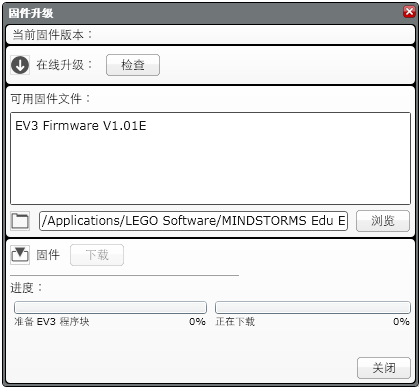

					<table cellpadding="0" cellspacing="0" border="0"><tbody><tr><td>
	
						<h1>固件升级<a name="top"></a></h1>
		<div id="block_1090" class="block blockHeader">
				<div class="description">固件是 EV3 程序块内部的软件。如果没有固件，则 EV3 程序块会无法工作。<br>
<br>
偶尔，LEGO 集团可能会发布新版固件，以添加增强功能或修复软件缺陷。您可以通过将 EV3 程序块的固件升级到最新版本，来拥有最新技术并提高 EV3 程序块的性能和可靠性。</div>
			</div>
	<div id="block_1091" class="block blockChaptor">
		<div class="title"><a name="UpdatingTheEV3Firmware" style="position:relative; top:-10px;"></a>升级 EV3 固件</div>
		<div class="description">要升级固件，需要从计算机到 EV3 程序块的 USB 连接。计算机还必须连接到 Internet。</div>
	</div>
	<div id="block_1092" class="block blockTable bullets">
		<table class="blockTable">
		
<tbody><tr><td>1.</td><td>开启 EV3 程序块并将其连接到计算机。只能使用 USB 连接进行固件升级。 </td></tr><tr><td>2.</td><td>在“工具”菜单中选择“固件升级”。“固件升级”对话框会打开，如此处所示。<br>
<br>
<br>
<br>
 </td></tr><tr><td>3.</td><td>单击“检查”（“在线升级”旁）可查看是否有新固件升级可用。如果可用，则将它们下载到计算机。 </td></tr><tr><td>4.</td><td>从“可用固件文件”中选择最新固件版本。如果未列出所需固件版本，请按压“浏览”以查找它。 </td></tr><tr><td>5.</td><td>单击“下载”将固件下载到 EV3。“固件升级”对话框底部的进度条将显示固件升级的进度。完成之后，EV3 程序块会自己重置。 </td></tr>		</tbody></table>
	</div>
	<div id="block_1093" class="block blockChaptor">
		<div class="title"><a name="ReInstallingTheOriginalFirmware" style="position:relative; top:-10px;"></a>重新安装原始固件</div>
		<div class="description">如果 EV3 停止工作，可以重新安装产品随附的固件，这也许会有所帮助。</div>
	</div>
	<div id="block_1094" class="block blockTip">
		<div class="title">提示和技巧</div>
		<div class="boxContent">
			<div class="description">在重新安装固件之前请检查 EV3 程序块电池。问题可能只是因为电池的损耗。</div>
				</div>
	</div>
	<div id="block_1096" class="block blockStep">
		<div class="title"></div>
		<div class="description">在重新安装之前需要重置 EV3 程序块。有关重置 EV3 程序块的帮助，请参见印刷“用户指南”的“故障排除”。<br>
<br>
当完成重置 EV3 程序块之后，按上述说明重新安装产品随附的固件。</div>
	</div>
	
			<div id="quick">
				<div class="header"><a href="./index.html?id=FirmwareUpdate#header">固件升级</a></div>
					<div class="quickText">快速链接</div>
					
					<ul>
	<li><a href="./index.html?id=FirmwareUpdate#UpdatingTheEV3Firmware">升级 EV3 固件</a></li><li><a href="./index.html?id=FirmwareUpdate#ReInstallingTheOriginalFirmware">重新安装原始固件 </a></li>					</ul>
			</div>
	
	</td></tr></tbody></table>